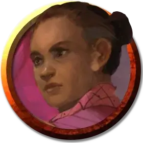

Ладонь башни
Tower Hand
Средний Гуманоид, любое мировоззрение

Класс Доспеха 14 (защита без доспехов)
Хиты 22 (4к8 + 4)
Скорость 40 футов
| мод | спас | ||
|---|---|---|---|
| СИЛ | 10 | +0 | +0 |
| ЛОВ | 14 | +2 | +2 |
| ТЕЛ | 12 | +1 | +1 |
| мод | спас | ||
|---|---|---|---|
| ИНТ | 12 | +1 | +1 |
| МДР | 14 | +2 | +2 |
| ХАР | 9 | −1 | −1 |
Навыки Проницательность +4
Чувства пассивное Восприятие 12
Языки Общий
Опасность 1/2 (100 опыта)
Бонус мастерства +2
Особенности
Защита без доспехов. Пока ладонь башни не носит ни доспехи, ни щит, к КД прибавляется его модификатор Мудрости.
Действия
Мультиатака. Ладонь башни совершает две атаки Безоружным ударом, либо две атаки Дротиком, либо по одной атаке каждым.
Безоружный удар. . Рукопашная атака оружием: +4 к попаданию, досягаемость 5 фт., одна цель. Попадание: 5 (1к6 + 2) дробящего урона.
Дротик. . Дальнобойная атака оружием: +4 к попаданию, дистанция 20/60 фт., одна цель. Попадание: 4 (1к4 + 2) колющего урона.
Реакции
Отражение снаряда. В ответ на попадание по нему дальнобойной атакой оружием, ладонь башни отражает снаряд. Полученный урон от атаки снижается на 7 (1к10 + 2).
Описание
На протяжении многих веков Небесная башня находится под присмотром исполнительного народа, исповедующего две отличающиеся друг от друга традиции.
Ладонь башни
Ладони башни относятся к Ордену ночного неба, древнему сообществу адептов боевых искусств, посвятивших себя защите мудрецов Небесной башни. Они ведут аскетичный образ жизни и редко что-либо говорят.